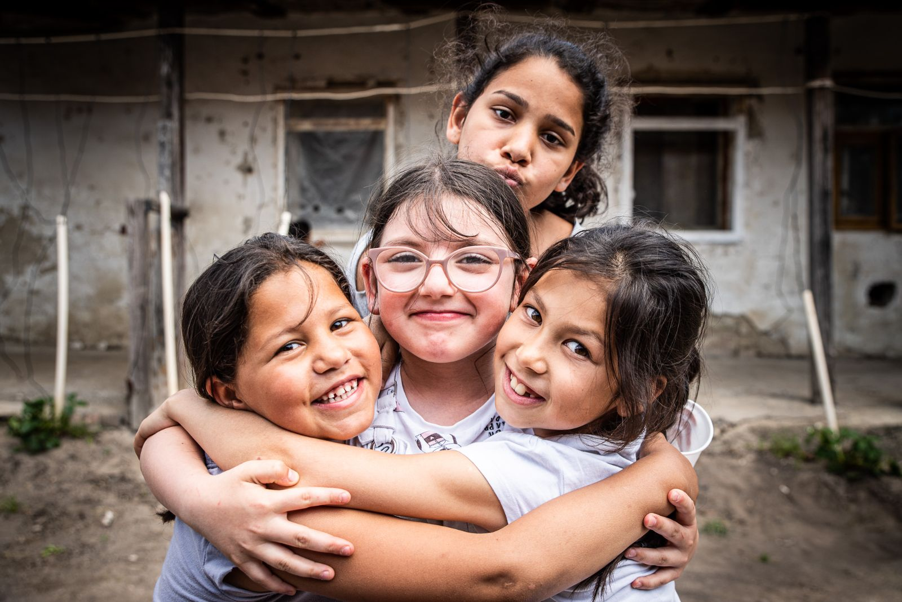
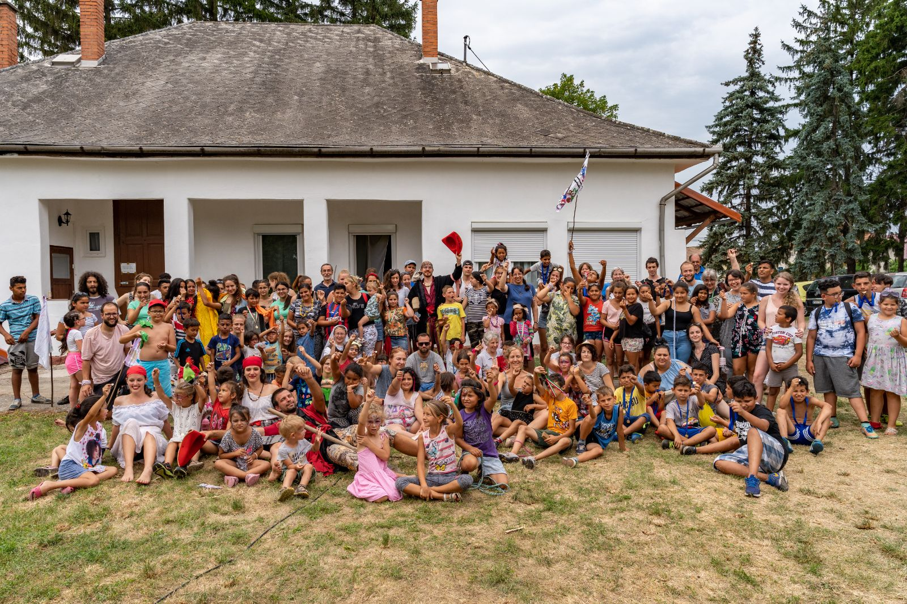
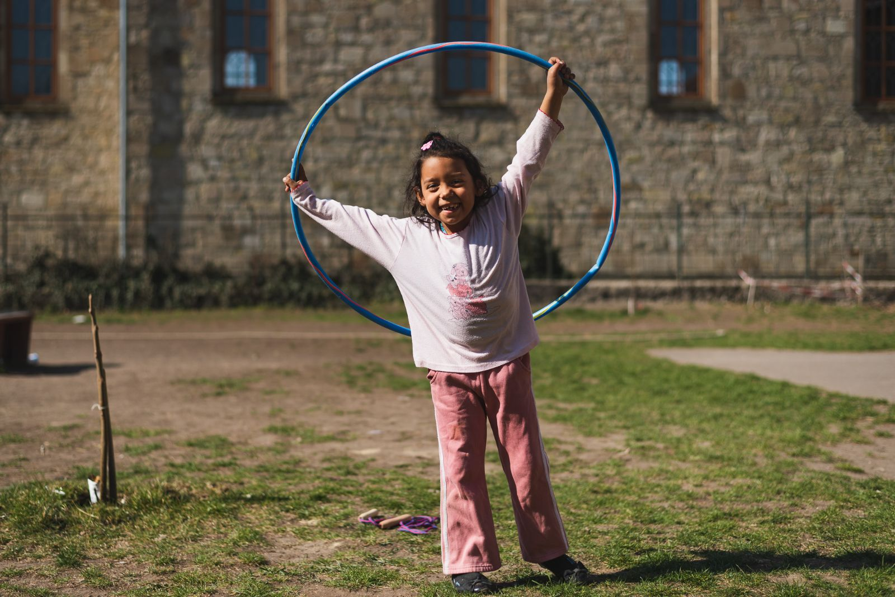
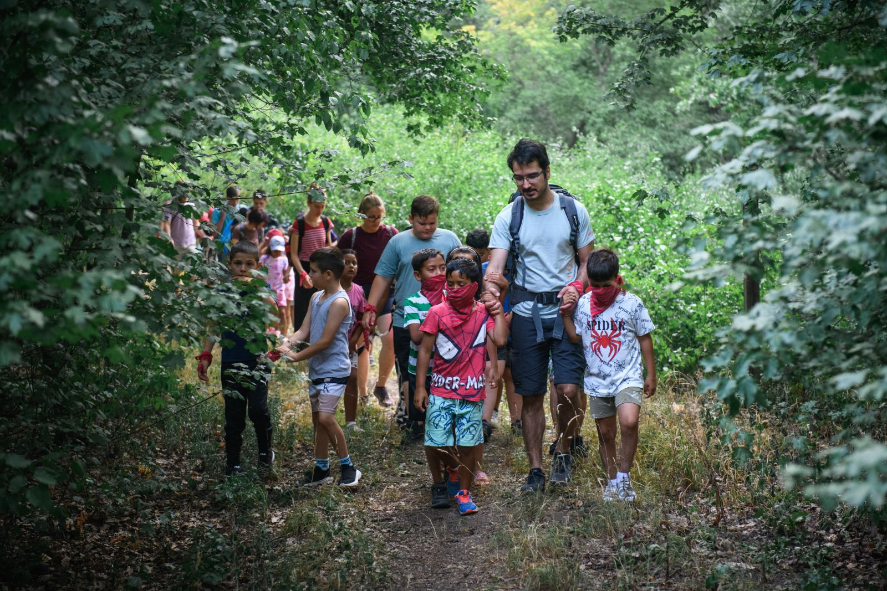
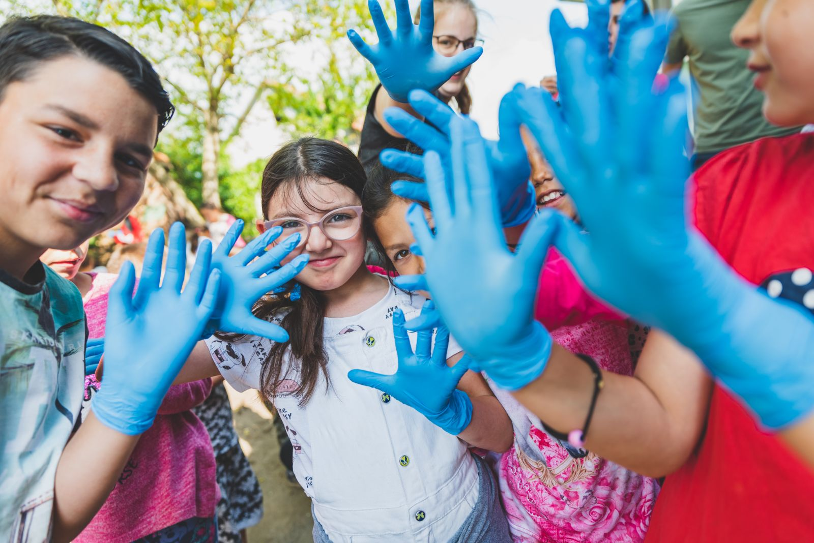
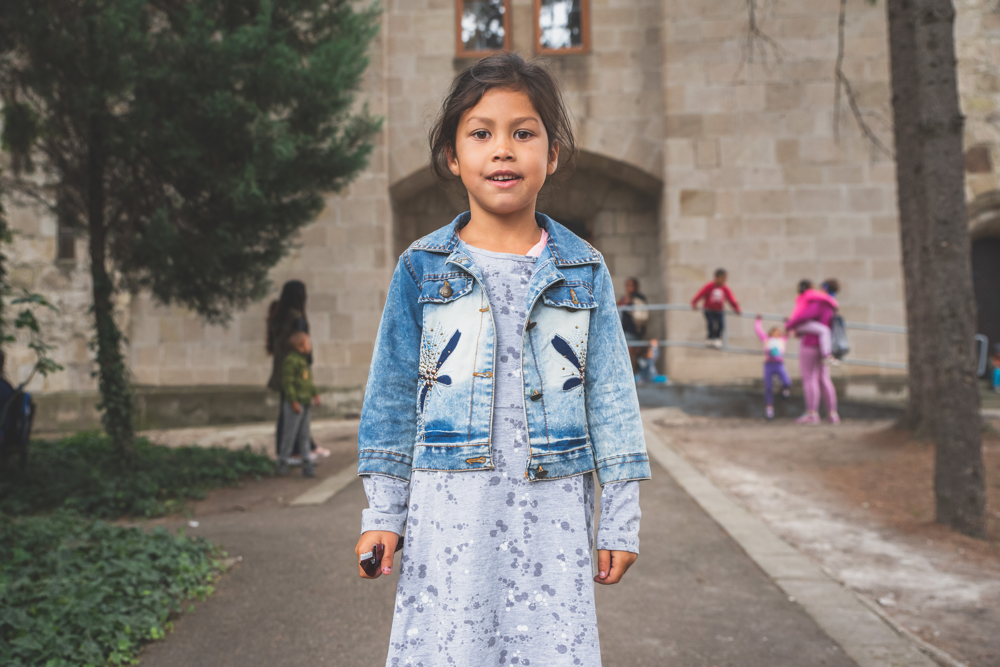
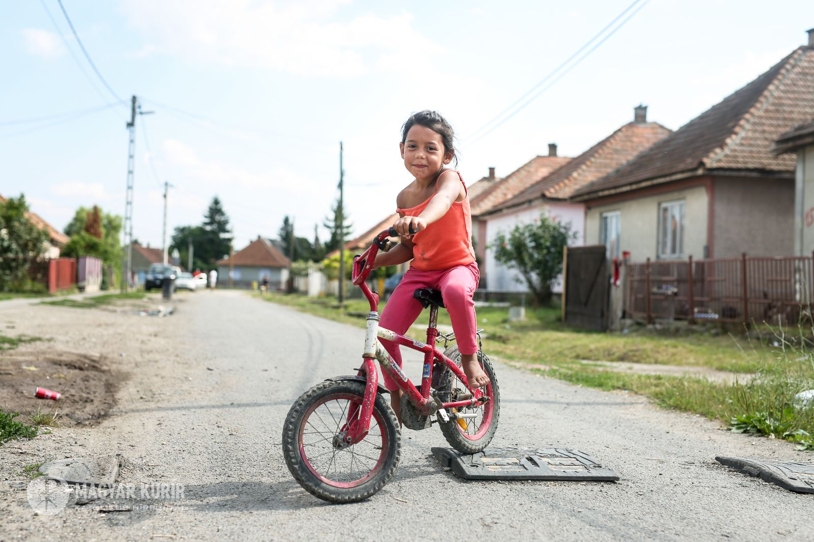
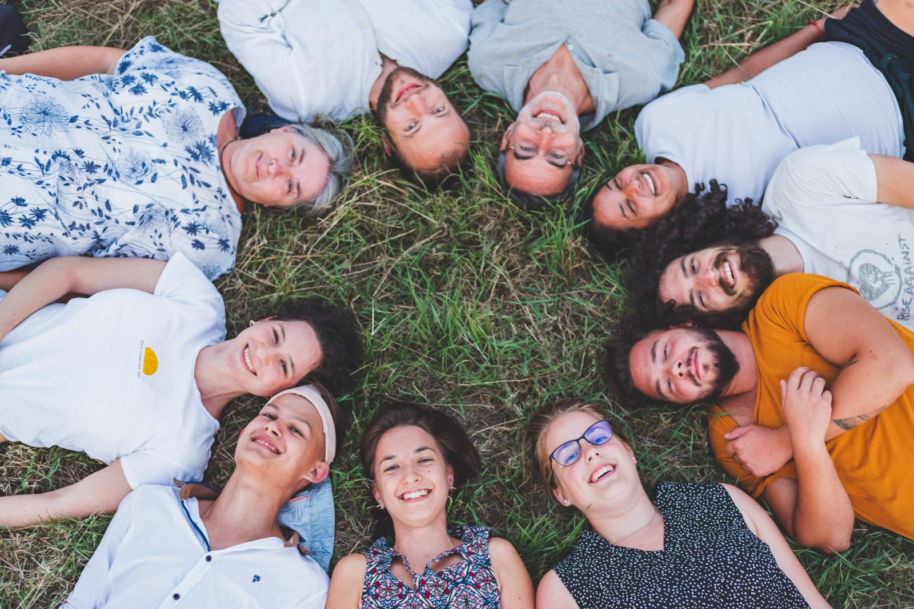

Hírek, történetek és beszámolók a kerecsendi mindennapokból – táborokról, programokról és a családokkal végzett munkánkról.


TÁBOR · 2026. július 13.Tábori hétfő: így indult a nyárGyerekek és önkéntesek egy héten át – az első nap képekben.
MINDENNAPOK · 2026. augusztus 28.Egy nap a családmentorainkkalReggeltől estig a családok mellett – mit jelent a kísérés a gyakorlatban.
HÉTVÉGI PROGRAM · 2026. június 21.Erdei túra a legkisebbekkelA havi hétvégi program ezúttal az erdőbe vitt minket.
TÁBOR · 2026. június 2.Környezetvédelmi nap a falubanKesztyű, zsák és sok nevetés – közösen tettük rendbe a játszóteret.
CSALÁDMENTORÁLÁS · 2026. május 15.Iskolára készenHogyan segítjük a gyerekeket az óvoda és az iskola közötti lépésben.
MINDENNAPOK · 2026. április 30.Tavasz a Dankó telepenKertprogram, biciklijavítás és az első meleg napok.Egyszeri adományod is hatalmas segítség, rendszeres adományod pedig lehetővé teszi, hogy hosszútávra tervezzünk.
Szeretnénk, ha éves bevételünk egyre nagyobb része saját forrásból, magánszemélyek és cégek támogatásából származna – így a programok akkor is folytatódhatnak, ha egy pályázat késik.
{{ q.a }}

23 évvel ezelőtt, amikor először szerveztünk tábort a kerecsendi hátrányos helyzetű gyerekeknek, a Dankó telepi gyerekek kővel hajigálták meg fiatal önkénteseinket. Egy évvel később alig várták, hogy elinduljon a tábor. A kövek eszükbe sem jutottak.
Ma évente 140 gyereknek adunk élményeket, minőségi időt, figyelmet és feltétlen szeretetet. A kerecsendi családok az elmúlt évben több mint 1000 ügyben fordultak hozzánk segítségért. Három önkéntessel indultunk, ma negyvenöt önkéntessel, húsz segítővel és számos hivatásos munkatárssal dolgozunk.
A Kerecsenden nagy számban élő nehéz sorsú, magára hagyott emberek, különösen a gyerekek életesélyeinek növelése, közösségteremtés és a tágabb társadalom felelősségvállalásának növelése.
Kerecsend Magyarország 300 legszegényebb települése közé tartozik. A gyerekekhez és családokhoz holisztikus szemlélettel fordulunk: a felmerülő kérdéseket összefüggésükben kezeljük, és szerteágazó kapcsolatokat építünk segítőszervezetek, intézmények és emberek között.
Mindezt azért, hogy mindannyian aktív, egyenrangú, alkotó és szabad tagjaivá váljunk a társadalomnak.